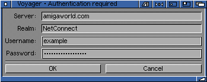

Voyager 3.5.2 (amigazen project). Original V3 manual by Chris Wiles, 1999.
6 Security and the Internet
6.1 General Authorisation
When you are surfing the World Wide Web occassionally you may stuble across a password protected area or file which can only be accessed by a person who knows this password.
Password protected areas are quite commonplace on the Internet. Some common uses of a passworded area are:
6.62 Gaining Access to Controlled Web Areas
Voyager allows you to insert any username and/or password needed to gain access to controlled (password protected) areas within a web site.
When you are on a site and you see something like "click here to enter our password protected area" Voyager will present a GUI like this:

Enter the username and password which you have been given for this site. If the password (or username) is incorrect you will be told that you are not authorised to enter this controlled area.
Once you have entered the correct details and have entered the controlled are you should not have to re-enter your password/username once you are within the password protected section.